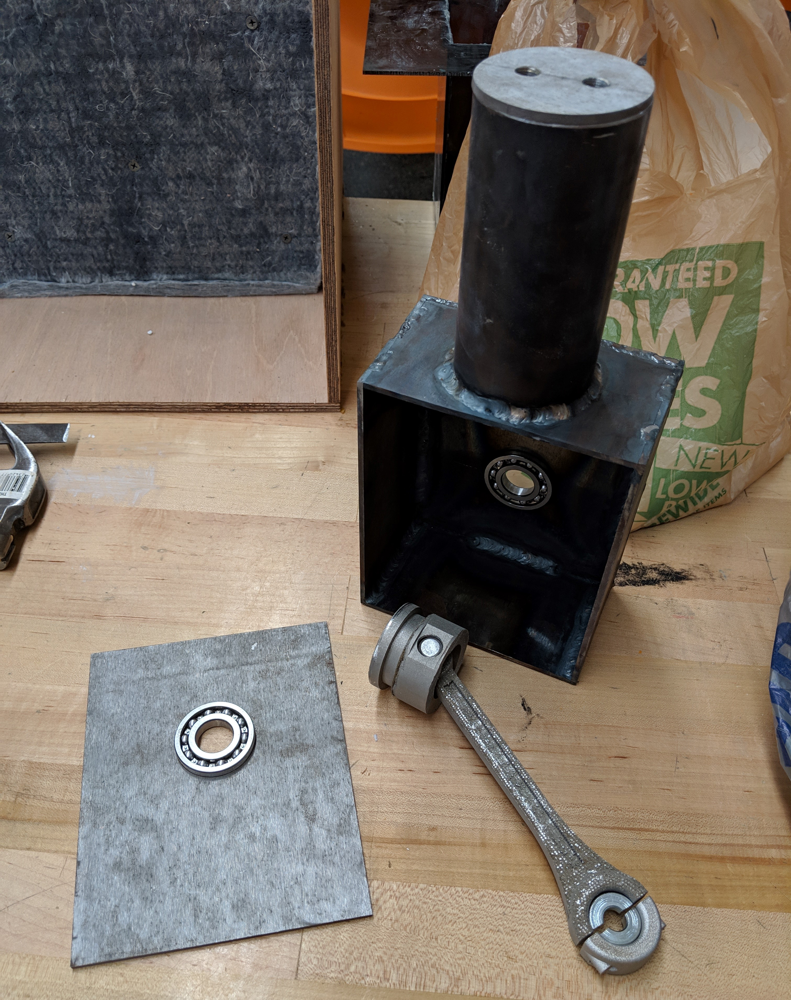
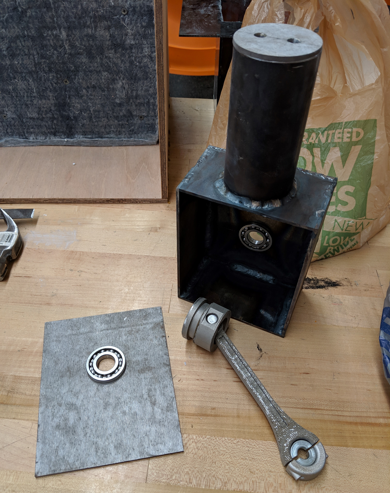

Georgiana Saku Blue
gblue@vols.utk.edu linkedin.com/in/georgianablue1623/
Experience & Project Work

AT&T Technology Development Program - TDP Engineer I
July 2019 - current
Time Warner Network Merger Business & Data Analyst
July 2019 - current
Time Warner Network Merger Business & Data Analyst
- Leveraged AT&T’s internal mapping application to display Time Warner assets alongside AT&T’s global network presence. The intricate mapping of thousands of sites was needed to showcase AT&T’s ability to deliver to the diverse network needs of Time Warner
- Completed an iterative cost analysis to provide a foundational 1Q2020 budget for the Time Warner network migration from external network providers to AT&T, delivering a cost savings of $562,854.04
- Performed a complete data analysis, studying inbound and outbound peering traffic to find an opportunity for expansion of a Service Node Routing Center to a 9th national peering site
Research Assistant at IACMI - The Composites Institute
May 2018 - Aug. 2018
Calculating the Embodied Energy of Recycled Composites (Oct. 2018)
Komal Kooduvalli, Georgiana Blue, Uday Vaidya, Soydan Ozcan
Honors
CAMX 2018 Outstanding Technical Paper Award Winner – Best in Track: Green & Sustainability
May 2018 - Aug. 2018
- Led research studying the degradation of unique biocomposites to better understand manufacturing’s effect on waste streams and potential applications of biocomposites
- Assisted in background research and calculating the embodied energy of recycled composites
Calculating the Embodied Energy of Recycled Composites (Oct. 2018)
Komal Kooduvalli, Georgiana Blue, Uday Vaidya, Soydan Ozcan
Honors
CAMX 2018 Outstanding Technical Paper Award Winner – Best in Track: Green & Sustainability


Senior Capstone
May 2019
Shown are images from my senior capstone project. My team was tasked with building a vaccine cooler, which could keep its contents cool inifinitely without the use of batties or electricity. My team designed a mechanically powered refrigeration system. Below, you can see the prototype of the vaccine cooler and the piston and crank shaft used to keep the system cool.
May 2019
Shown are images from my senior capstone project. My team was tasked with building a vaccine cooler, which could keep its contents cool inifinitely without the use of batties or electricity. My team designed a mechanically powered refrigeration system. Below, you can see the prototype of the vaccine cooler and the piston and crank shaft used to keep the system cool.
 

Mechanical Engineering 470: Advanced CAD
Project 02
Of many university projects, designing a planetary gear set was among the most challenging. I was tasked with designing a functioning planetary gear set in which the central gear, the planetary gears and the outer gear all could be made fixed. This project required an in depth understanding of how gears are designed.
Project 02
Of many university projects, designing a planetary gear set was among the most challenging. I was tasked with designing a functioning planetary gear set in which the central gear, the planetary gears and the outer gear all could be made fixed. This project required an in depth understanding of how gears are designed.


Energy Efficiency & Renewable Energy Research Assistant at Oak Ridge Nation Lab
Aug. 2017 – Jan. 2018
Aug. 2017 – Jan. 2018
- Conducted research, testing various support strategies for large scale additive manufacturing to better understand how to create complex structures
- Designed multiple pieces using SolidWorks CAD, such as a wind turbine blade shown here, which was printed using large scale additive manufacturing
Home Projects
My passion for design in technology has rooted from a love of art. Shown are two of my favorite pieces I have created. The first being a laser engaved landscape of my hometown, Knoxville, Tennessee, and the second piece is a collage I created. The collage displays bold fonts and images meant to represnt my personal wants and goals.
My passion for design in technology has rooted from a love of art. Shown are two of my favorite pieces I have created. The first being a laser engaved landscape of my hometown, Knoxville, Tennessee, and the second piece is a collage I created. The collage displays bold fonts and images meant to represnt my personal wants and goals.